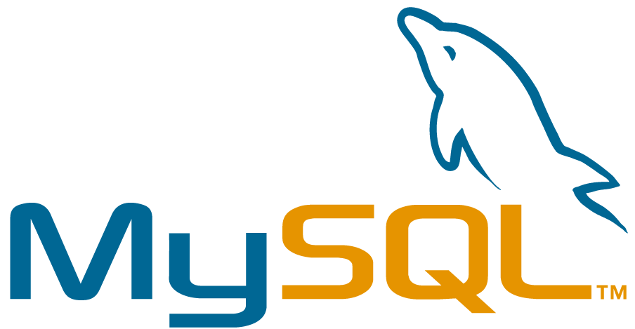

Projets
Durant la formation
North Health (application web)
Dans le cadre de l'epreuve E5 de mon BTS SIO, cette application est destinée à la prise de rendez-vous médicaux et à la consultation d'ordonnances pour les patients.
- Création des maquettes IHM web, mobile et lourde.
- Création de diagrammes UML (cas d'utilisation, activité, classe).
- Création de la base de données.
- Déploiement avec Heroku.
Langages :
Base de données :
Durant le stage
Recettage
Ce recettage a été fait dans le cadre du lancement d'un nouveau site du groupe ADDIPLAST.
J'ai fais la comparaison entre l'ancien site et le nouveau site avant qu'il ne soit déployé via WordPress.
Il a fallu revoir plusieurs critères :
_ La correspondance/redirection des urls anciennes et nouvelles (et ré-écriture si nécessaire).
_ Les meta données (présence, nombre de caractère, optimisation).
_ La présence des mots-clés qui optimisent le SEO.
_ Vérifier les attributs alt des images.
_ Vérifier le fonctionnement des liens.
_ Faire des remarques/suggestions sur les problèmes visuels.
_ Répertorier les pages OK et 404.
_ Corriger les doublons.
J'ai pu me référer au fichier Sitemap.xml et à une charte edito nommage établie par le client et mon entreprise d'accueil.
Lien OneDriveVeille technologique
J'ai réalisé un travail de veille, analyse et synthèse sur le référencement des contenus YMYL (Your Money Your Life). Mon objectif était de comprendre ce que ce terme signifie et de définir des recommandations pour la création de contenus YMYL, en particulier pour les pages à thématique santé.
Mes sources :
- Document Google de la marche à suivre des Search Quality Raters.
- Site "Be more you"
- Site "Hill web creations"
- Newsletter site "Backlinko"
Blog People&Baby
Dans le cadre d'une stratégie marketing, le but était d'occuper les résultats de recherche en créant ce nouveau blog, et en l'optimisant niveau SEO. Un template de base avait été fourni par le client, cependant il a fallu le re-faire et le re-travailler via Elementor.
- Traduction de l'anglais au français.
- Meta-données.
- Alt attributs.
- Inclusion de liens.
- Changer le thème couleur pour un raccord avec les couleurs de l'entreprise.
CMS :